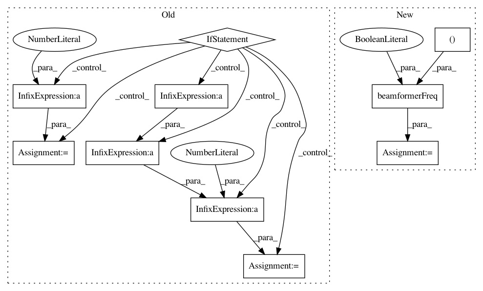

3d5e54b8d683ab0a18210b8d27add5fa35dcb81d,acoular/fbeamform.py,BeamformerFunctional,calc,#BeamformerFunctional#Any#Any#,422
Before Change
kj = 2j*pi*self.freq_data.fftfreq()/self.c
steerVecFormulation = steerVecTranslation(self.steer)
nMics = float(self.freq_data.numchannels)
if self.r_diag:
normFactor = sqrt(1.0 / (nMics * nMics - nMics))
elif not self.r_diag:
normFactor = 1.0 / nMics
for i in self.freq_data.indices:
if not fr[i]:
eva = array(self.freq_data.eva[i][newaxis], dtype="float64") ** (1.0 / self.gamma)
eve = array(self.freq_data.eve[i][newaxis], dtype="complex128")
After Change
csm = self.freq_data.csm[i]
fill_diagonal(csm, 0)
csmRoot = fractional_matrix_power(csm, 1.0 / self.gamma)
beamformerOutput, steerNorm = beamformerFreq(False, steerVecFormulation, False, 1.0, (self.r0, self.rm, kji, csmRoot[newaxis]))
beamformerOutput /= steerNorm // take normalized steering vec
// set (unphysical) negative output values to 0
indNegSign = sign(beamformerOutput) < 0
In pattern: SUPERPATTERN
Frequency: 3
Non-data size: 10
Instances
Project Name: acoular/acoular
Commit Name: 3d5e54b8d683ab0a18210b8d27add5fa35dcb81d
Time: 2018-01-16
Author: tom.j.gensch@campus.tu-berlin.de
File Name: acoular/fbeamform.py
Class Name: BeamformerFunctional
Method Name: calc
Project Name: acoular/acoular
Commit Name: 212be41d28a7d40ce63d3ad1c5d3c453a83a1f1c
Time: 2017-10-07
Author: tom.j.gensch@campus.tu-berlin.de
File Name: acoular/fbeamform.py
Class Name: BeamformerEig
Method Name: calc
Project Name: acoular/acoular
Commit Name: 914ac784d0a616c4f6a030fc8130281269c74432
Time: 2017-10-07
Author: tom.j.gensch@campus.tu-berlin.de
File Name: acoular/fbeamform.py
Class Name: BeamformerBase
Method Name: calc